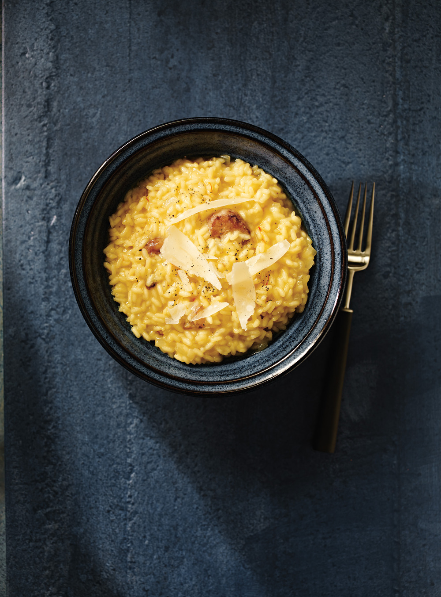

Risotto Milanese

Some Italian Charme
The best Food for Mister Caesar
Ingredients
- Chicken stock
- Olive oil
- Onion
- Rice
- Safran
- White Wine
- Parmigiano
Steps
- In a medium saucepan, bring the chicken stock to a simmer; keep warm. In a large saucepan, heat the olive oil. Add the onion, season with salt and pepper and cook over moderate heat, stirring, until softened, about 5 minutes
- Add the rice and cook for 1 minute, stirring to thoroughly coat. Crumble the saffron into the wine and add it to the rice
- Continue adding the stock 1/2 cup at a time, stirring constantly, until it is nearly absorbed between additions
- The risotto is done when the rice is al dente and suspended in a thick, creamy sauce, about 20 minutes total
Go back to see more